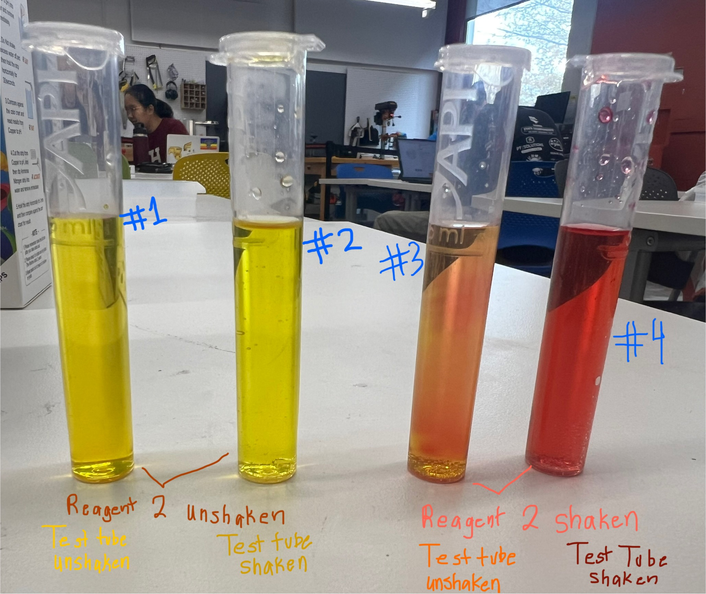

Week 6 Team Updates
Enclosure: Cut PVC pipes with different lengths to accurate flatness to prevent any water inflow in the future; brainstormed on anchoring and additional buoyancy constraints. Cork material didn't work; will test out various lengths with styrofoam and with our inflatable buoy in the coming week.
Sensing team:
We obtained potassium nitrate from Duda Energy in order to create nitrate solutions for testing.
We created a 100 ppm nitrate solution and then diluted it to also make a 50 ppm solution.
The test strips' instructions were to submerge the test strip in the solution for two seconds, take it out of the water, and let the color develop while leaving the strip level.
However, in a sensor, it will be difficult to take a test strip out of the water, so we want to develop a methodology that will allow us to get measurements from the strip while it is still submerged.
By leaving a test strip submerged for 30 seconds, we got a reading between 25–50 ppm in comparison to the control (taken out of the water) which read 50–100 ppm. Further research is needed as to whether letting the test strip remain submerged for longer will give us readings closer to the real concentration and if the test strip gives a lower reading at a consistent difference or ratio.
